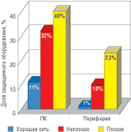

Василий Мочар,
ведущий эксперт аналитической компании ITResearch,
expert@itresearch.ru
На надежности работы оборудования, кроме «внутренних» причин, самым непосредственным образом сказываются и внешние факторы. От таких явлений, как природные катаклизмы или «человеческий фактор», на 100% уберечься нельзя в принципе. Но чаще всего причиной проблем становится некачественное электропитание, и здесь уже святая обязанность ИТ-менеджера — обеспечить отсутствие перебоев и выходов за регламентируемые параметры.
Характеристики электрического тока регламентируются ГОСТом 13109-87 (изменения напряжения допускаются в пределах +-10%, частоты — +-1 Гц; коэффициент нелинейных искажений — <8%). Если требования производителя какого-то оборудования жестче, чем требования ГОСТа, желательно сразу обеспечить требуемый режим работы (иначе можно потерять гарантию).
Все проблемы с электропитанием решаются с помощью источников бесперебойного питания (ИБП), или UPS. Можно также использовать сетевые фильтры, но они, в целом защищая от «плохого» электропитания, не способны обеспечить беспрерывную работу оборудования.
Существуют две группы ИБП — переменного и постоянного тока. Последние представляют собой электропитающую систему, дооборудованную аккумуляторами, и используются большей частью в секторе телекоммуникаций и связи, а также в различного типа устройствах сигнализации. В отличие от них, ИБП переменного тока ориентированы в первую очередь именно на защиту от внешних факторов и используются существенно шире. Собственно, эти устройства мы и рассматриваем в данном обзоре.
Практика защиты
Один из регулярно проводимых компанией ITResearch (http://www.itresearch.ru) опросов российских ИТ-менеджеров (в нем участвуют предприятия малого и среднего бизнеса из различных регионов и отраслей промышленности) был посвящен организации систем бесперебойного электропитания (СБЭП). Не углубляясь в тонкости, отметим один из интереснейших выводов исследования.
Отправной точкой при организации СБЭП, несомненно, служит качество электрической сети. Хорошими свои электрические сети считают только 19% ИТ-менеджеров, еще 50% оценивают их как неплохие. И почти треть всех компаний считает, что качество электрических сетей, от которых запитано их оборудование, неудовлетворительно. Исходя из формальной логики, следовало бы ожидать, что именно последние защищены «по максимуму». Однако это оказалось не совсем так.
По данным опроса, доля реально защищенных серверов фактически не зависит от качества сети, примерно одинакова и близка к 100%. В целом следует признать, что к защите серверов ИТ-менеджеры компаний подходят со всей серьезностью. Но к менее критичному оборудованию отношение совсем другое.
Тенденция к увеличению процента иной защищенной техники при ухудшении качества электросети прослеживается вполне отчетливо. Однако даже в случае плохой сети, как видно из рисунка, защищено всего лишь 40% ПК и 23% периферии (принтеров, копиров…). В случае неплохой сети, как и следовало ожидать, получены промежуточные цифры, и нужно все же признать, что они ближе к показателям для плохой, чем для хорошей сети (это немаловажный вывод!).
|  | Процент защищенной техники в сетях различного качества. Источник: ITResearch
|
Безусловно, вызывает интерес довольно большая разница в доле защищенных ПК — почти в 30% — при переходе от хорошей к плохой электрической сети. Однако гораздо более важно, что даже в самых неблагоприятных (объективно или субъективно) внешних условиях 60% ПК и 77% периферии остается незащищенными. И это не может не внушать опасения.
Российский рынок ИБП
По данным ITResearch, за первое полугодие 2004 г. в России было продано почти 628 тыс. ИБП на сумму чуть более 95 млн долл. Показатели аналогичного периода прошлого года были превышены на 18,5% в натуральном выражении и на 19,4% — в денежном. Это означает, что данный рынок развивается довольно быстро, причем без существенного изменения цен и технологической структуры (что привело бы к разным темпам роста денежных и натуральных показателей). Стоит отметить, что сравнение объемов продаж ИБП с показателями компьютерного рынка в целом дает коэффициент 0,37 — это отличный показатель, свидетельствующий о растущей популярности ИБП у широких масс потребителей.
Анализ модельных рядов показывает, что товарное предложение на рынке ИБП полностью сформировалось, а его структура в последнее время меняется очень незначительно. По итогам первого полугодия текущего года в сегменте однофазных устройств на российском рынке ИБП было представлено 118 моделей (459 мощностных модификаций), а в сегменте трехфазных — 25 моделей и 151 модификация по мощности. Таким образом, весь спектр товарного предложения на рынке ИБП насчитывает 143 модели (610 модификаций по мощности).
Более подробно об этом см. в издании «Бестселлеры ИТ-рынка».
За последние годы наиболее жесткая борьба разворачивается в нижнем ценовом сегменте ИБП line-interactive с аппроксимированной синусоидой. Об этом свидетельствует как насыщенность модельных рядов в этом сегменте, так и то, что новые производители, выходя на наш рынок, начинают именно с него, а в случае успеха пробуют осваивать и другие сегменты.
Классификация ИБПВ нормативных документах — стандарте IEC 62040-3 (введенном в 1999 г.) и его европейском эквиваленте ENV 50091-3 — определены следующие основные типы ИБП: резервные (Passive Standby), линейно-интерактивные (Line-Interactive) и ИБП с двойным преобразованием энергии (Double Conversion). В сложившейся у нас практике резервные ИБП чаще всего называют off-line, а за ИБП с двойным преобразованием энергии закрепилось название on-line. Компания ITResearch применяет технологическую сегментацию рынка, в основу которой положены принцип архитектурного исполнения электрической схемы устройства (off-line, line-interactive, on-line), тип инвертора (в ИБП line-interactive применяются инверторы, дающие чистую или аппроксимированную синусоиду), конструктивное исполнение корпуса (Tower — башня, Rack Mount — для установки в стойку или RT (Rack/Tower) — универсальное исполнение). В сегменте on-line можно выделить четыре основные группы устройств:
Модульные системы существуют в однофазных и трехфазных вариантах. К этой же группе относятся масштабируемые архитектуры типа APC ISX или Liebert Foundation. По классификации European Committee for Electrotechnical Standardization (CENELEC) существует девять основных аварийных ситуаций в сетях электропитания:
Резервные ИБП должны защищать оборудование от первых трех неполадок в сети, линейно-интерактивные — от первых пяти, а ИБП с двойным преобразованием — от всех девяти потенциальных аварийных ситуаций. |
Игроки рынка
В первом полугодии 2004 г. на рынке присутствовали 16 торговых марок, продукция которых продавалась в значительных объемах: APC, Centralion, Chloride, GE DE, Inelt, Ippon, Liebert, Mandex Trading (торговые марки Akita, Plus UPS и Predator), MGE, NeuHaus, NeWave, PowerCom, PowerMan, Powerware, Riello, Sven. В сегменте off-line предлагалась продукция только компаний APC, Liebert, MGE и Powerware. В сегменте line-interactive, наоборот, не представлены только компании Chloride и NeWave. В сегменте on-line, к которому относится 46% моделей, представлено большинство торговых марок, за исключением Ippon, Mandex Trading, PowerMan, Sven.
Самый широкий ассортимент традиционно предлагает компания APC (http://www.apc.ru) — 21 модель и более 70 модификаций по мощности. Кроме того, для системы бесперебойного питания InfraStruXure невозможно учесть число модификаций по мощности, поскольку ее модульная архитектура позволяет гибко конфигурировать общую мощность системы, устанавливая силовые блоки разного номинала. Таким образом, компания APC предлагает и массово продает ИБП различных классов с наиболее широким охватом потребительских групп, но тем не менее не становится абсолютным монополистом, так как на рынке есть сильные игроки, предлагающие альтернативную продукцию, но только в ограниченном числе технологических сегментов.
Например, компания PowerCom (http://www.pcm.ru), имея 12 моделей с 75 модификациями по мощности, сосредоточилась в основном на легких line-interactive и on-line ИБП, относящихся к типу недорогих устройств для широкого потребителя. Вместе с тем распространение устройств класса on-line средней мощности, таких, как серия ONL, ориентированных на защиту более серьезного оборудования в корпоративном секторе рынка, требует определенного уровня доверия клиентов, что не позволит компании массово продавать ИБП откровенно низкого уровня. И мы видим, как год за годом PowerCom смещается из сегмента low-end в средний ценовой сегмент. На первых этапах этого процесса отрыв компании от других игроков массового рынка был практически незаметен, но сейчас можно сказать, что перепозиционирование произошло.
Компания MGE (http://www.mgeups.ru) продает на рынке 15 моделей (71 модификация по мощности). Основные ее силы традиционно сосредоточены на тяжелых ИБП для корпоративного сектора, хотя компания и планирует усилить акцент на устройства для домашнего пользователя. Устройства MGE рассчитаны на пользователей, готовых доплачивать за марку и собственное спокойствие, но в этом есть свой резон, поскольку декларируется использование комплектующих более высокого качества. Более того, жесткие европейские стандарты производства не дают производителям выработать стратегию агрессивной экономии.
В нижнем ценовом сегменте, где представлена в первую очередь продукция азиатских производителей, появился новый игрок — торговая марка Sven (http://www.sven.ru), предлагающая модельные ряды, сходные с PowerMan, Ippon, Plus UPS. Под торговой маркой Sven продаются line-interactive ИБП двух технологических подсегментов: с аппроксимированной синусоидой и с чистой синусоидой. Акцент в данных устройствах делается прежде всего на емкость аккумуляторных батарей, хотя линейки и находятся на близких ценовых уровнях.
Компании Powerware (http://www.powerware.com/russia), GE DE (http://www.geindustrial.com), Chloride (http://www.chloride.ru), Liebert (http://www.liebert.com), хотя и предлагают довольно широкие модельные ряды, основной акцент все же делают на корпоративные рынки, главным образом на сегмент тяжелых ИБП: здесь им принадлежит 71% моделей и более 63% модификаций по мощности для трехфазных устройств.
У компаний NeuHaus (http://www.neuhaus.ru) и Inelt (http://www.inelt.ru), которые также предлагают тяжелые ИБП, ассортимент все же несколько смещен в сторону более легких устройств, что подтверждают и новинки, представленные ими в сегменте line-interactive c аппроксимированной синусоидой, — NeuHaus SmartLine2 и Inelt SmartStation RT и RX U. Всего компания Inelt предлагает 14 моделей и по этому показателю находится на третьем месте на российском рынке.
Альтернативная классификацияВ 2001 г. была сделана попытка модифицировать стандарт и придумать классификацию, которая более точно описывала бы потребительские свойства ИБП. При этом новая классификация не выходит за рамки стандарта IEC 62040-3. Новый подход основан на трехуровневой системе индексов, позволяющих более точно описать потребительские характеристики ИБП. На первом шаге определяется степень зависимости выхода ИБП от питающих сетей (от входа), на втором — форма выходного сигнала ИБП, на третьем шаге — динамические характеристики ИБП. К примеру, тип ИБП может обозначаться так: VFI SS 111, VI SX 122. Расшифровка обозначений в новой классификации: Шаг 1 VFI (Voltage and Frequency Independent) — выходное напряжение и частота на выходе ИБП не зависят от входной сети. VI (Voltage Independent) — выход ИБП зависит от частоты входа, но напряжение поддерживается в заданных пределах за счет пассивного или активного регулирования. VFD (Voltage and Frequency Dependent) — выходное напряжение и частота на выходе ИБП зависят от входной сети. Шаг 2 SS — синусоидальная форма выходного сигнала (КГИ<8%) при линейной и нелинейной нагрузке; XX — несинусоидальная форма выходного сигнала при нелинейной нагрузке; YY — несинусоидальная форма выходного сигнала при любой нагрузке. Шаг 3 1 — Нормальный режим — автономный режим — bypass-режим; 2 — 100%-ное изменение линейной нагрузки в нормальном или автономном режиме (худший параметр); 3 — 100%-ное изменение нелинейной нагрузки в нормальном или автономном режиме (худший параметр). Типы VFD, VI и VFI в принципе соответствуют «классическим» резервным, интерактивным и on-line ИБП, а дополнительные индексы позволяют специалисту быстро определять качество источника и сопоставлять его с потребностями своей системы. Однако, несмотря на свою достаточность и даже избыточность, новая классификация имеет довольно серьезный недостаток: она интуитивно не понятна, и ее легко освоить только достаточно узкому кругу профессионалов. |
Резервные ИБП
Инвертор резервного ИБП подключен параллельно сетевому источнику и действует как источник резервного питания. В режиме Normal нагрузка подключена к питающей сети через узел, в состав которого могут входить коммутатор, фильтр, регулятор. В режиме Stored energy, когда параметры питающей сети не соответствуют требованиям системы, инвертор, преобразуя постоянное напряжение батарей в переменное, обеспечивает питание нагрузки от батарей.
Преимущества резервных ИБП: простое техническое решение, а следовательно, низкая цена и малые размеры. К недостаткам относятся большое время переключения на питание от батарей (у современных моделей оно составляет в среднем около 4 мс, однако в зависимости от характера нагрузки процесс перехода на резервное питание может затянуться до 10 мс), отсутствие изоляции нагрузки от электросети и невозможность стабилизации частоты выходного напряжения. Кроме того, в сетях с частыми и значительными отклонениями напряжения от номинального батареи эксплуатируются в очень неблагоприятном режиме, и срок их службы сокращается. В целом ИБП этого класса можно характеризовать как компромисс между приемлемым уровнем защиты от неполадок в электросети и ценой. Мощность выпускаемых устройств колеблется от 220 до 2000 В.А.
ИБП данного класса предназначены в первую очередь для защиты такого оборудования, как ПК, рабочие станции, офисные АТС, кассовые аппараты, домашняя видео/аудиотехника. Основные параметры, на которые следует обращать внимание при покупке таких устройств, — мощность, диапазон входного напряжения без перехода на питание от батарей, время резервирования и время переключения на работу от батарей.
Безусловным лидером данного сегмента рынка заслуженно считается компания APC. Из устройств других производителей здесь можно принимать во внимание только ИБП Powerware 3110.
Линейно-интерактивные ИБП
В устройствах этого типа инвертор также подключен параллельно сетевому питанию. Однако он выполняет функции не только резервного источника питания, но и зарядного устройства, действуя как конвертор. В режиме Normal нагрузка запитывается от сети через основной (normal AC) вход ИБП. Одновременно инвертор, работая в реверсивном режиме как конвертор, заряжает аккумулятор. Когда отсутствует напряжение на обоих входах, источник переходит в режим Stored energy, и энергия, запасенная в аккумуляторе, через инвертор поступает к нагрузке. При этом коммутаторы, подключенные к входам ИБП, разомкнуты. Если питающее напряжение отсутствует только на входе normal AC, то ИБП переходит в режим байпаса (bypass). В этом режиме питание нагрузки осуществляется только от резервного источника сетевого напряжения, которое подается на вход bypass AC.
В ИБП этого класса имеются дополнительные узлы (бустеры и триммеры), позволяющие расширить диапазон входного напряжения, при котором напряжение на выходе поддерживается на приемлемом уровне без перехода на питание от батарей. Бустер (booster) при понижении напряжения на входе ИБП отвечает за повышение напряжения на его выходе. Триммер (trimmer) выполняет противоположную функцию — при повышенном напряжении в сети он понижает выходное напряжение ИБП. Однако, как и для резервных ИБП, при расширении входного диапазона увеличиваются пределы стабилизации напряжения на выходе устройства, поскольку возможности регулирования довольно ограниченны. Слишком большие колебания выходного напряжения могут отрицательно сказаться на подключенной нагрузке.
К недостаткам линейно-интерактивных ИБП относятся отсутствие изоляции нагрузки от электросети, сложность стабилизации частоты выходного напряжения (для большинства устройств в силу особенностей технического решения это вообще невозможно). Стабилизация выходного напряжения относительно номинального значения выполняется весьма посредственно: типовое значение данного параметра для устройств этого класса — не менее 5—7%. Кроме того, линейно-интерактивные ИБП неэффективны при работе с нагрузкой с высокой степенью нелинейности.
В целом линейно-интерактивные ИБП обеспечивают приемлемый уровень защиты электропитания и служат недорогой альтернативой более сложным системам, предназначенным для работы с чувствительной к неполадкам в электросети нагрузкой. Как правило, мощность выпускаемых устройств составляет от 250 до 10 000 В.А.
При питании от батарей выходное напряжение инвертора номинально равно действующему значению напряжения, однако форма огибающей напряжения может заметно отличаться от синусоиды. В простых моделях линейно-интерактивных ИБП огибающая может быть практически прямоугольной (меандр) или ступенчато приближаться к синусоиде, а в более совершенных моделях это будет точная синусоида. Для питания обычных ПК допустимо напряжение с прямоугольной огибающей.
В наиболее массовом сегменте интерактивных ИБП с аппроксимированной синусоидой активно конкурируют компания APC с моделью Back-UPS RS, PowerCom со своими Black Knight, King и King Pro, PowerMan с устройством Back Pro, а также Ippon с моделью Back Power Pro. Среди более «продвинутых» ИБП с чистой синусоидой безусловный лидер — ИБП APC Smart-UPS.
ИБП с двойным преобразованием
В данных ИБП инвертор включен в цепь последовательно между источником и нагрузкой. В режиме Normal нагрузка постоянно получает питание по цепи выпрямитель-инвертор, где переменный ток преобразуется в постоянный и наоборот — т. е. происходит двойное преобразование. В режиме Stored energy, когда параметры питающей сети не соответствуют требованиям, нагрузка переходит на питание от аккумулятора через инвертор, который поддерживает выходное напряжение в заданных пределах. Режим Bypass имеет место в том случае, когда инвертор по каким-либо причинам не может обеспечить нагрузку требуемой мощностью (перегрузка, разряд аккумулятора) или отсутствует питающее напряжение на входе normal AC.
Даже при больших отклонениях входного напряжения ИБП продолжает питать нагрузку чистым синусоидальным стабилизированным напряжением (как правило, отклонения амплитуды выходного напряжения не превышают 5% устанавливаемого пользователем номинального значения даже при работе на нелинейную нагрузку). Благодаря используемой схеме такое понятие, как время переключения на резервное питание от батарей, для ИБП данного класса просто не имеет смысла. На рынке представлены ИБП как с кремниевыми тиристорными (SCR) выпрямителями, так и с современными IGBT-выпрямителями (биполярные транзисторы с изолированным затвором). Управляющие блоки используют микропроцессоры или цифровые сигнальные процессоры (Digital Signal Processor, DSP).
Основное преимущество ИБП с двойным преобразованием напряжения — надежная защита нагрузки практически от любых неполадок в сети электропитания. Кроме того, напряжение на выходе ИБП стабилизируется с высокой степенью точности независимо от состояния электросети или нагрузки.
Недостатки ИБП этого класса — относительно низкий кпд (около 88% при том, что у современных устройств он составляет 92—93%), более сложная по сравнению с ИБП других классов электрическая схема и, как следствие, высокая цена. Кроме того, мощные ИБП вносят большие искажения во входную сеть, и для их устранения приходится устанавливать дополнительные фильтры.
ИБП с двойным преобразованием имеют наиболее широкий спектр применений и соответственно отличаются самым большим разнообразием архитектуры и дизайна. Основное различие связано с фазностью устройств. В зависимости от того, сколько фаз на входе и на выходе имеет ИБП on-line, они делятся на источники 1:1, 3:1 и 3:3. Первая подгруппа запитывается от обычной электрической сети напряжением 220 В, а трехфазные ИБП (с фазностью 3:1 и 3:3) — от сети 380 В. Однофазные ИБП устанавливаются непосредственно перед защищаемым контуром, и их достаточно легко перепрофилировать, а трехфазные ИБП становятся частью всей инженерной инфраструктуры. Естественно, возможны и смешанные случаи, когда мощные трехфазные on-line ИБП служат для защиты индивидуальной нагрузки, например, в промышленности, но чаще всего их действительно используют для построения централизованной или групповой СБЭП (система бесперебойного электропитания). Следует отметить, что на базе достаточно мощных (а они имеются на рынке) однофазных on-line устройств также можно построить централизованную СБЭП, но эти исключения все же подтверждают правило.
Еще одно технологическое деление проводится по конструктивному исполнению — башенные (Tower) устройства или монтируемые в стойку (RM). Связано это с тем, что RM-источники, в отличие от башенных ИБП, по большому счету нельзя рассматривать как самостоятельные устройства. Сама концепция их применения предполагает, что устройство предназначено для работы внутри стойки с защищаемым оборудованием, этот ИБП не будет никуда перемещаться, и его обслуживание, в первую очередь смена аккумуляторных батарей, может быть затруднено. В связи с этим башенная и RM-модификации ИБП могут заметно различаться по конструкции и по стоимости (последняя у RM традиционно выше). Следует отметить, что относительно недавно появилась тенденция выпускать некоторые ИБП в универсальном корпусе RT (Rack/Tower), допускающем их использование и в том, и в другом варианте. Таковы, например, устройства Liebert GXT 2U, MGE UPS Systems Comet EX RT, Powerware 9125, APC Smart-UPS RT.
ИБП on-line могут обеспечивать избыточную надежность системы за счет резервирования внутренних модулей системы (построения массивов электропитания) или использования двух или более параллельных ИБП.
В сегменте малых и средних мощностей, а также в условиях ограниченных габаритов СБЭП, доминируют модульные системы, которые в России предлагают компании APC (Symmetra), Invensys Powerware (PW 9170), Liebert (Nfinity), NeWave (ConceptPower). Такие источники выполнены в виде распределяющих между собой нагрузку модулей, которые вставляются в стойку. Поскольку отдельные модули имеют меньшую массу и дешевле, чем весь источник, это позволяет мобильнее и с меньшими затратами наращивать мощность системы. Избыточность означает, что используется большее число модулей по сравнению с тем, которое необходимо для работы системы при полной нагрузке. Таким образом, все модули «страхуют» друг друга. Если один модуль выйдет из строя или будет удален, остальные сразу же начнут поддерживать полную нагрузку. Какой именно модуль вышел из строя, не имеет значения, потому что все другие модули постоянно включены и работают на общую нагрузку. В этом отношении модульные системы — точное подобие RAID-массивов и имеют не меньшую надежность.
Апологет модульных систем, компания APC, недавно вывела на рынок массив электропитания Symmetra LX — результат модернизации системы Symmetra Power Array, представляющий собой однофазные или трехфазные модульные блоки вертикального и стоечного исполнения мощностью от 4 до 16 кВ.А. Еще в одной разработке компании — Symmetra MW (мегаваттная Symmetra) используются силовые трехфазные модули мощностью 66,7 кВ.А и массой всего 65 кг.
Что касается мощных трехфазных систем, здесь пока в основном используются параллельные (часто встречается обозначение RPA — Redundant Parallel Architecture) системы с резервированием. Сейчас на российском рынке представлено более 20 моделей трехфазных ИБП различных производителей, и все они позволяют строить RPA-системы. Следует отметить, что технология «параллелизации» сегодня активно внедряется и в классе однофазных систем средней мощности, и практически все ведущие производители имеют в своем арсенале однофазные устройства, позволяющие добиться избыточности и резервирования.
Нельзя не упомянуть также систему InfraStruXure компании APC, которую уже не назовешь просто ИБП, поскольку это настраиваемая архитектура для создания готовых решений из стандартизованных компонентов. Эта система отвечает новейшему течению на рынке — предлагать законченную инфраструктуру для консолидированного в одном месте высокотехнологичного оборудования. И здесь имеются в виду не только полноценные центры данных, которых не так уж много, не только сетевое и серверное оборудование в банках и у операторов связи, а фактически все серверные комнаты даже в самых небольших компаниях.
Такие полноценные инфраструктурные решения, как ISX от APC или Foundation от Liebert, пока по плечу только технологическим лидерам рынка, имеющим к тому же достаточно средств на маркетинг этих систем. Естественно, к таковым относятся не только две названные выше компании, но пока лишь они «ввязались» в эту игру, а APC вообще объявила данное направление стратегическим в развитии компании.
По объективным причинам ISX пока получается ощутимо дороже, чем равная ей по мощности СБЭП, реализованная стандартным образом. Естественно, если посчитать дополнительные расходы на установку системы кондиционирования, стойки, установку и обслуживание системы и т. п., то получается, что все далеко не так плохо и решение APC вполне конкурентоспособно (стоимость владения может оказаться даже ниже, чем для традиционных систем). Но чтобы донести эту мысль до потребителей, нужно немало усилий и опять-таки денег. Если у APC хватит сил и воли продержаться этот сложный начальный период, то можно рассчитывать, что через несколько лет логика поставки не «урезанных» СБЭП, а полноценных инфраструктурных решений, таких, как ISX, получит в отрасли признание.